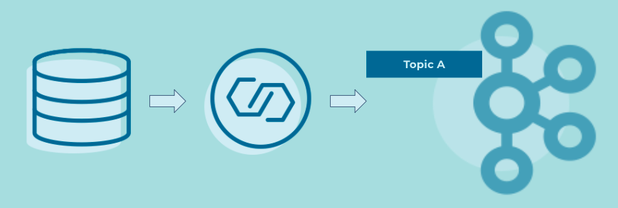

Event Source Connector
Event Processing Applications may want to consume data from existing data systems, which are not themselves Event Sources.
Problem
How can we connect cloud services and traditional systems, like relational databases, to an Event Streaming Platform, converting their data at rest to data in motion with Events.
Solution

Generally speaking, we need to find a way to extract data as Events from the origin system. For relational databases, for example, a common technique is to use Change Data Capture, where changes to database tables—such as INSERTs, UPDATES, DELETEs—are captured as Events, which can then be ingested into another system. The components that perform this extraction and ingestion of Events are typically called "connectors". The connectors turn the origin system into an Event Source, then generate Events from that data, and finally sends these Events to the Event Streaming Platform.
Implementation
When connecting a cloud services and traditional systems to Apache Kafka®, the most common solution is to use Kafka Connect. There are hundreds of ready-to-use connectors available on Confluent Hub, including blob stores like AWS S3, cloud services like Salesforce and Snowflake, relational databases, data warehouses, traditional message queues, flat files, and more. Confluent also provides many fully managed Kafka connectors in the cloud.
There are several options to deploy such connectors. For example, the streaming database ksqlDB provides an ability to manage Kafka connectors with SQL statements.
CREATE SOURCE CONNECTOR `jdbc-connector` WITH(
"connector.class"='io.confluent.connect.jdbc.JdbcSourceConnector',
"connection.url"='jdbc:postgresql://localhost:5432/my.db',
"mode"='bulk',
"topic.prefix"='jdbc-',
"table.whitelist"='users',
"key"='username');
Considerations
- End-to-end data delivery guarantees (such as exactly-once delivery or at-least-once delivery) depend primarily on three factors: (1) the capabilities of the origin Event Source, such as a cloud service or relational database; (2) the capabilities of the Event Source Connector, and (3) the capabilities of the destination Event Streaming Platform, such as Apache Kafka or Confluent.
- Security policies as well as regulatory compliance may require appropriate settings for encrypted communication, authentication, and authorization, etc. between Event Source, Event Source Connector, and the destination Event Streaming Platform.
References
- This pattern is derived from Channel Adapter in Enterprise Integration Patterns by Gregor Hohpe and Bobby Woolf
- See this Kafka Tutorial for a full Kafka Connect example